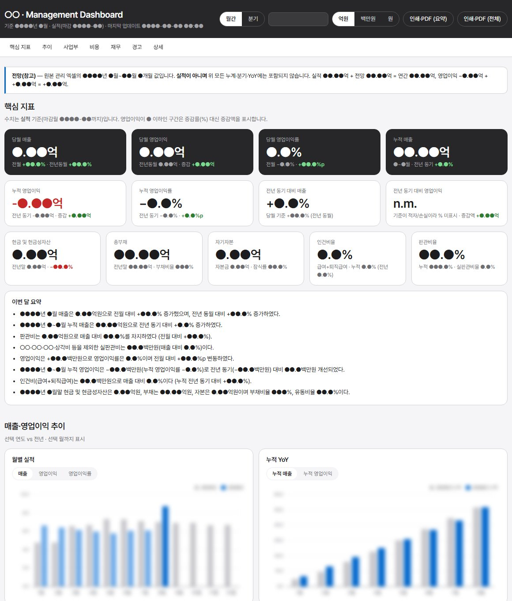
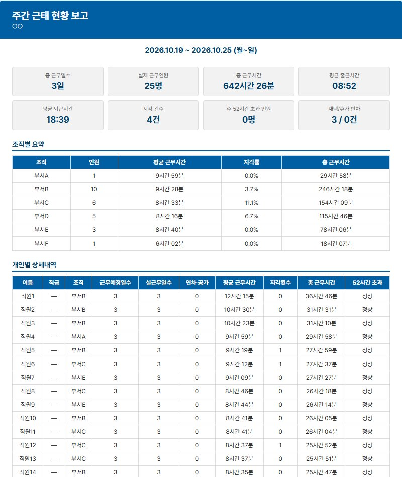

재무회계 및 결산
- 월·분기 결산 및 경영실적 자료 작성
- 매출·매입 전표, 세금계산서, 세무자료 관리
- 일일 자금일보·자금수지 관리
경영관리 매니저 · 6년차
재무회계 · 경영관리 · AI 기반 업무 자동화
회계·세무 실무를 바탕으로 결산, 자금관리, 경영실적 보고를 수행합니다. 반복되는 자료 취합과 보고 업무는 Claude Code와 Python 등으로 자동화하고, 결과는 원본 데이터와 대조해 검증합니다.
Core Strengths
경영관리·회계 실무가 중심이고, AI와 개발 도구는 그 실무를 더 정확하고 빠르게 만드는 수단입니다.
Career
세무법인에서 회계·세무 기본기를 익히고, 기업 경영지원을 거쳐 경영관리와 업무 자동화로 역할을 넓혀 왔습니다.
Key Projects
현업에서 반복되던 업무를 직접 정의하고, AI 도구로 시스템을 구현한 뒤 실제 데이터로 검증했습니다. 각 카드의 자세히 보기를 누르면 역할과 구현 내용을 볼 수 있습니다.
역할 구분 — 업무 문제·처리 기준·검증 규칙 정의와 실데이터 검증·운영은 본인이 맡고, 코드 구현에는 Claude Code를 활용했습니다.
환불 요청 메일과 관리자 사이트 처리 내역을 건별로 확인·대조해야 하던 업무를 하나의 흐름으로 통합했습니다.
관리회계 결산자료와 더존 재무제표를 정제·통합해 KPI, Excel 보고서, 웹 대시보드를 한 번에 만드는 절차로 바꿨습니다.

Power BI 보고서는 파일 구성과 일부 화면까지 확인한 단계입니다.
법인·사용자별로 흩어진 카드 명세서를 통합하고, 계정과목별 비용 분석과 경영진 보고서까지 한 번에 갱신되도록 했습니다.
출입기록 원본을 통합해 근무시간·근태 지표를 계산하고, 주간·월간 보고서를 자동으로 만들도록 했습니다.

근태 점수·등급 산정은 의도적으로 넣지 않고 객관 지표만 보고합니다.
Approach
프로젝트마다 범위는 달랐지만, 대표적으로 아래 순서로 업무를 개선했습니다.
어디서 반복·누락이 생기는지 확인
처리 기준과 예외 규칙을 문장으로 확정
원본 양식·오류·기준월 차이 파악
Claude Code로 도구 구현
원본 합계·건수와 대조
운영하며 기준 보완
Skills & Tools